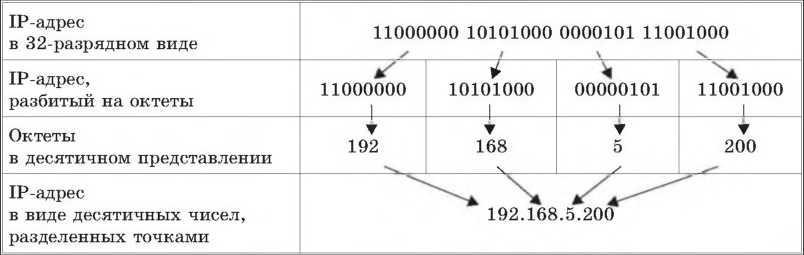
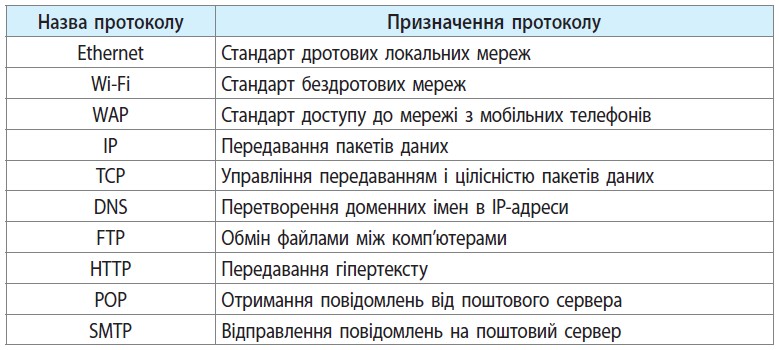

Адресація в IP мережах є ключовим елементом, що дозволяє мережевим пристроям знаходити один одного та обмінюватися даними. Вона базується на протоколі Internet Protocol (IP), що використовується для передачі пакетів даних в Інтернеті та внутрішніх мережах. Основний принцип роботи адресації полягає в тому, що кожен мережевий пристрій має унікальну адресу, яка дозволяє ідентифікувати його в мережі.
Кожна IP-адреса складається з 32-бітного числа, яке поділяється на 4 октети (байти), кожен з яких може приймати значення від 0 до 255. Наприклад, адреса 192.168.0.1 складається з чотирьох октетів: 192 (бінарний код 11000000), 168 (бінарний код 10101000), 0 (бінарний код 00000000) та 1 (бінарний код 00000001).
Процес адресації включає в себе вибір IP-адреси для кожного мережевого пристрою та налаштування маршрутизаторів, щоб забезпечити доставку пакетів даних до потрібного приймача. При передачі даних, кожен пакет містить адресу відправника та адресу приймача. Маршрутизатори визначають найближчий шлях до приймача та передають пакет далі, поки він не дійде до приймача.
Протоколи, що використовуються в адресації в IP мережах, включають в себе Internet Protocol version 4 (IPv4) та Internet Protocol version 6 (IPv6). IPv4 є стандартом, що був розроблений ще в 1981 році, тоді як IPv6 був розроблений у 1998 році як більш сучасний та розширений стандарт. IPv6 підтримує значно більшу кількість IP-адрес (2^128) порівняно з IPv4 (2^32).
